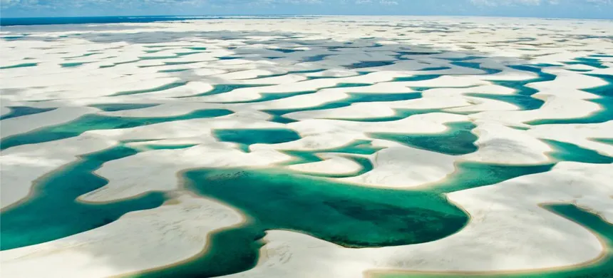
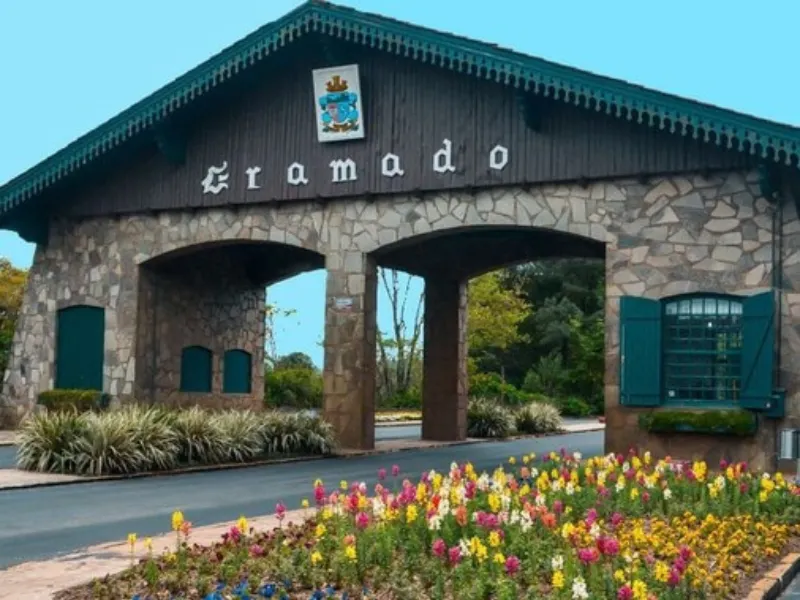
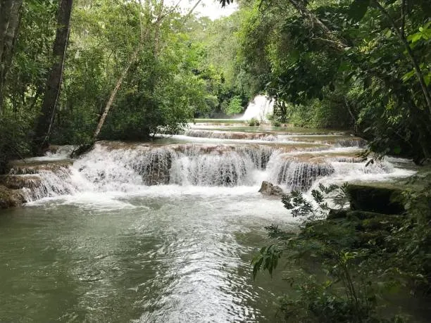
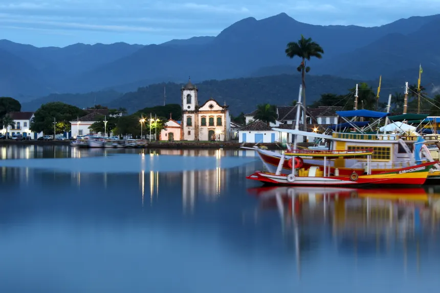

Melhores passeios turisticos para fazer em cada Região do pais
Obs:Aqui esta a lista dos melhores locais para turista no brasil
- Lenóis Maranhense (Maranhão)

- Fernando de Noronha (Pernambuco)
- Gramado (Rio Grande do Sul)

- Bonito (Mato Grosso do Sul)

- Paraty (Rio de Janeiro)

Voltar